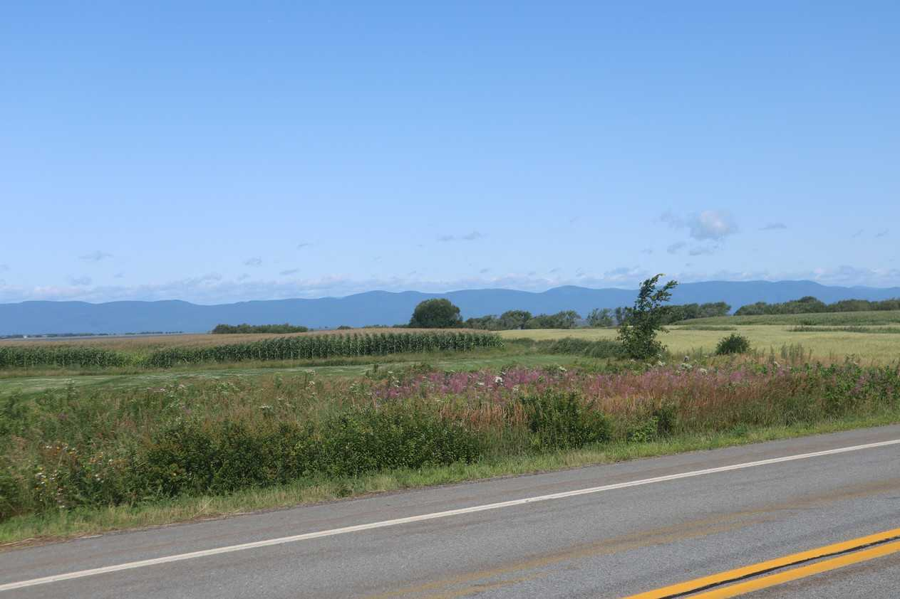
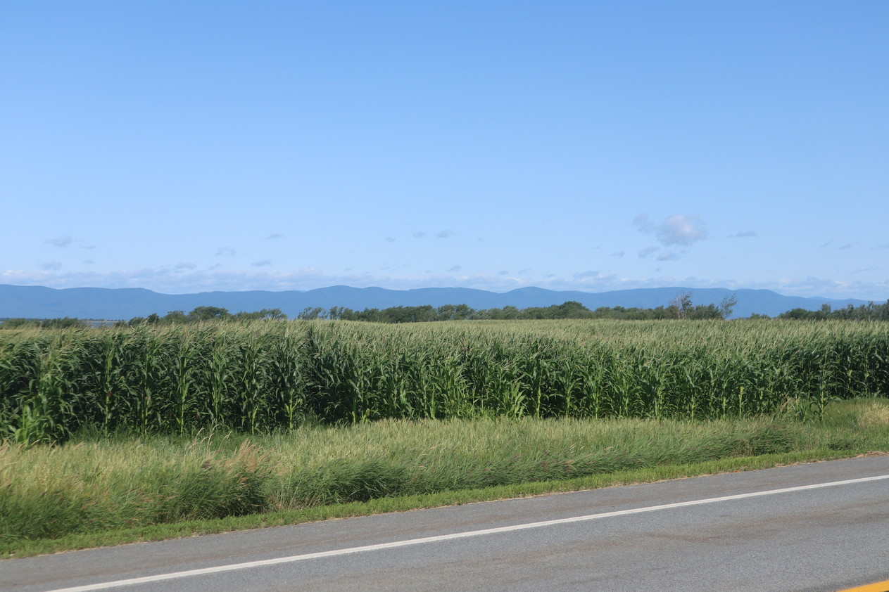
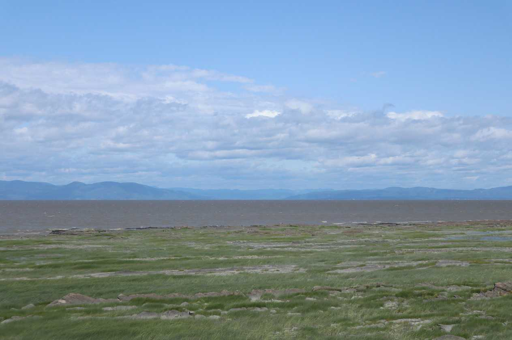
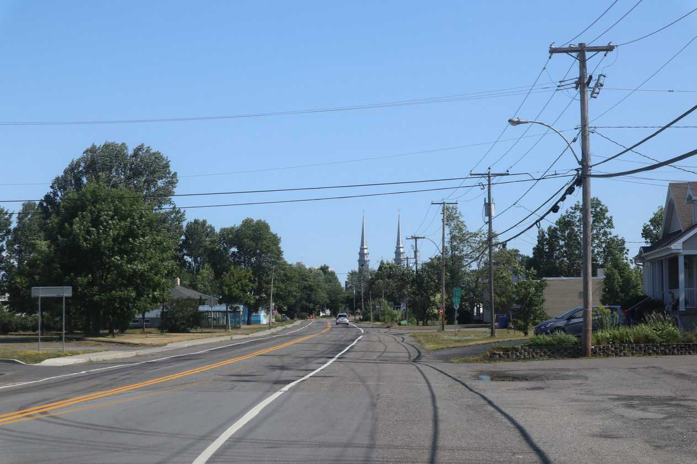
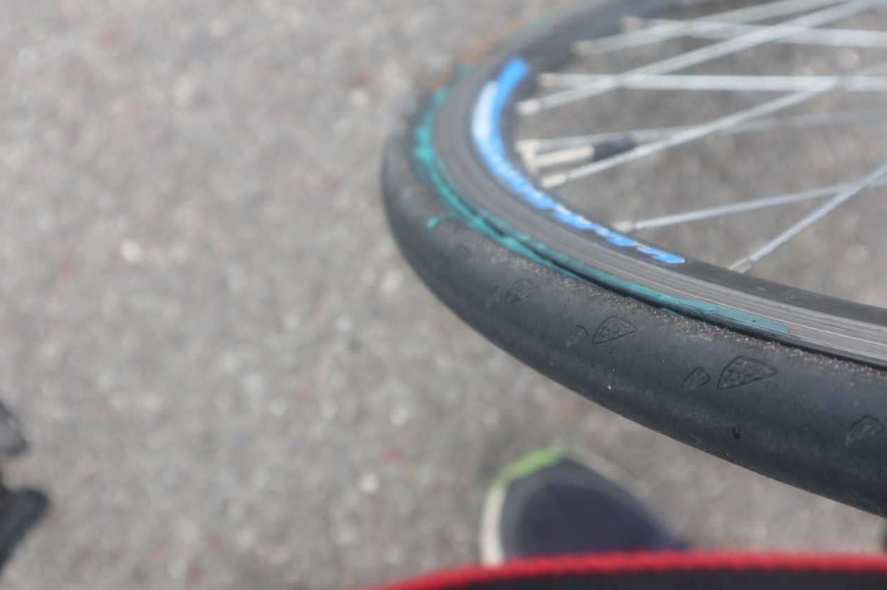
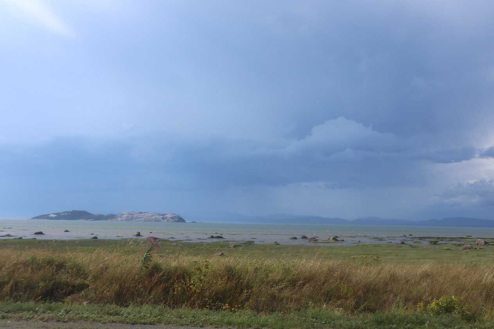

The farms and country are beautiful. Every small town entrance has a beautiful, custom engraved sign.

Lots of corn. Reminds me of Ontario.

I've been following the St Lawrence for days now. It now has gotten very big and changed colour. I like this picture as it has many different coloured and textured layers.

A church built in the late 1700s is in every town.
I was biking hard and fast today and making good progress. I biked past what looked like a brewery/pub where there were many tourists and even bicyclists. I did not stop at all as I wanted to keep biking. However, soon my progress was delayed regardless of my plans as I got a flat.

My tire was bleeding with the flat - wasted my remaining water cleaning it out.

Rain clouds have been following me all day. Towards the end of the day they caught up to me. I got a little wet and hid the rest of brief rain under the roof of a gas station.
I was glad to have made it to Trois-Pistoles. I've been noticing a lot of towns with 'Trois' in it.